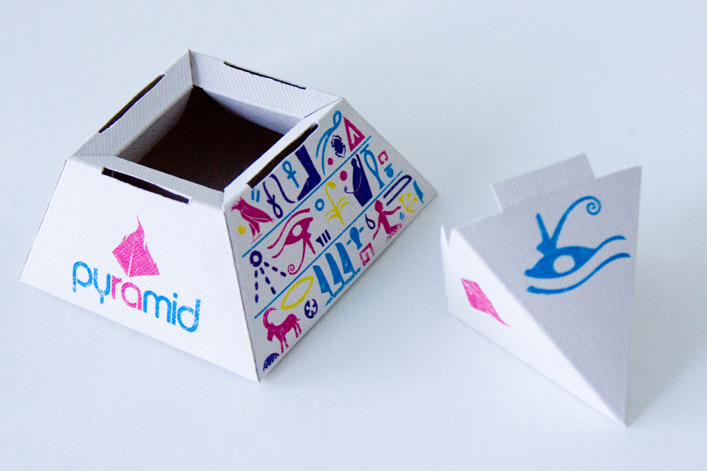

Tobacco & Coal
A bag of shisha tobacco fits into the pyramid box, and the obelisk holds a stack of coals used with a hookah.

Ancient Egyptian & Modern Swiss
Leaning on a similar foundational emphasis on organization, I developed a brand that uses Egyptian hieroglyphs in colors and contrast inspired by the Swiss modernist movement, called pyramid.

Symbol & Pattern
Using online examples of Egyptian décor and documents, actual hieroglyphs were replicated to create the colorful icons that build the pyramid packaging patterns.

Print & Fold
Through much trial and error, dielines were developed for a pyramid box with removable cap and an obelisk box that sits upright in a base.
